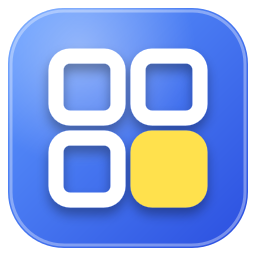

Folgt dem Hell- oder Dunkelmodus deines Browsers. Wählst du ein Design, merkt sich die Seite es für diesen Modus.Follows your browser’s light or dark mode. Pick a theme and the site remembers it for that mode.